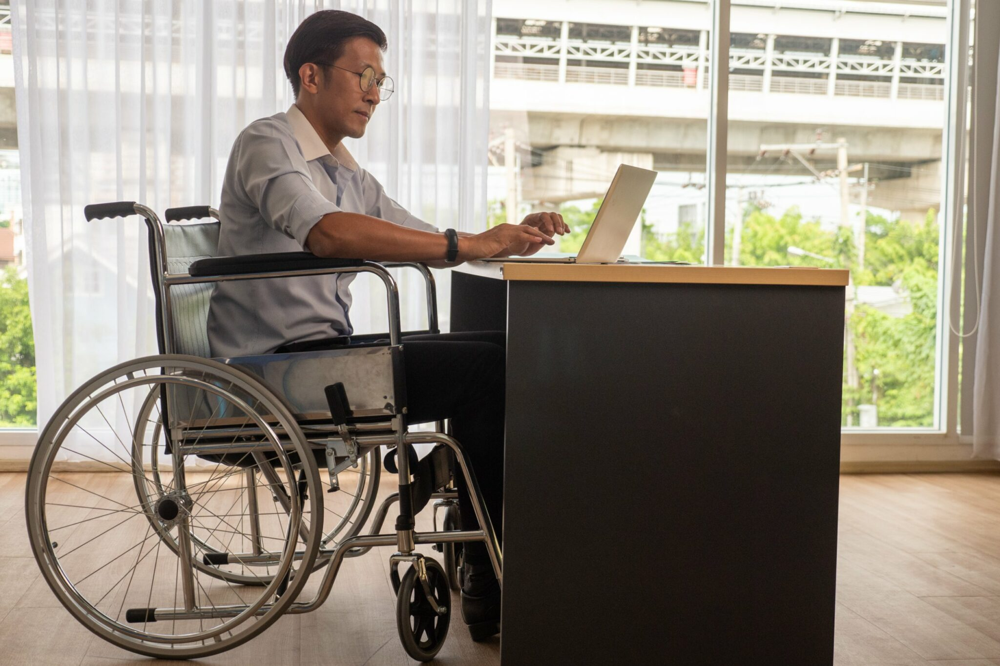

More job opportunities for disabled workers
The Philippines' Department of Labor and Employment (DOLE) is working to increase job opportunities for persons with disabilities (PWDs) by raising the hiring quota in both the public and private sectors. DOLE Secretary Bienvenido Laguesma announced plans to increase the government employment quota for PWDs from 1% to 2%. Additionally, he expressed support for making it mandatory for private companies with over 100 employees to allocate at least 1% of their workforce to PWDs. Laguesma emphasized the department's commitment to advocating for the rights and advancement of workers with disabilities, both personally and within society.